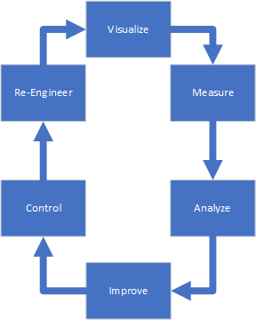

|
|
Lesson Contents | In this Lesson, we will discuss the basics of Intelligent Automation. |
Intelligent Automation is a method of automating and managing all of your businesses process by combining the tools of traditional Business Process Management (BPM), analytics, and Machine Learning/Artificial Intelligence into a single methodology. It includes both It is the overall initiative that provides an end-to-end solution that is customized to your organization, and addresses every type of process your organization uses.
A process may be as simple as how you apply for a vacation, or as complex as shepherding a new product through state and federal regulatory compliance. In other words, a process is a set of activities designed to accomplish one or more specific organizational goals. The process may include human and/or automated components; may be rigid or entirely ad hoc; and may be subject to frequent changes in response to changing market and business needs.
Intelligent Automation requires the successful integration of four key technologies to provide concrete solutions for managing processes.
BPM is the management system that coordinates human and other activities to make business processes more efficient, and provide a basis for continuous improvement. It is the core technology used by intelligent automation. The overall purpose of BPM is to enable an organization to accomplish the following recurring goals:

Digital Process Automation, or DPA, is a method of using computer technology to reduce human activity or intervention in a process, especially for repetitive tasks that have little variance in each iteration. For instance, you might need to enter data about a user in a form, such as their name, phone number, address, and so forth. Traditionally, you might have to type this data manually into a paper form. an DPA system like the one incorporated into Process Director, on the other hand, might provide an electronic form that enables you to choose the user from a list, and automatically fill out all of the required data about that user. This is a very simple example of how DPA might greatly increase the speed and reduce the effort of data entry. Similarly, rather than requiring someone to hand-carry a request form from one approver to another, an DPA system would automatically notify each approver that an approval action was required, and enable them to perform the approval action electronically.
DPA, by automating—and instantly performing—actions that would traditionally require human activity, provides noticeable savings in both time and money. Moreover, this DPA vastly reduces the additional costs of correcting mistakes, such as data entry errors. When applied to bottlenecks in a process, implementing DPA technologies can show immediate and obvious improvements.
ML/AI uses mathematical algorithms in a computer system to simulate the same kind of learning behaviors in a computer that we see in humans. Of course, this learning behavior is relatively simple and shallow when compared to the deep complexity of the human mind. Computers, however, do have one key ability that humans do not, and which make ML/AI extraordinarily useful: the ability to evaluate huge amounts of data in a very short time. Using mathematical algorithms, ML/AI systems can analyze very large datasets, apply statistical algorithms to them, and provide predictive, actionable result in a very short time. Humans could, of course, do this, but it would take a very long time—perhaps even years—to properly analyze and make predictive conclusions from these large data sets. The speed and power of computers, on the other hand, can provide a number of benefits from complicated analysis in seconds:
One of the largest challenges for any organization is integrating data from many different systems. Intelligent Automation enables these integrations so that any data, from any accessible system, can be used in your Intelligent Automation implementation. An Intelligent automation system like Process Director provides native connections to many different types of data sources. This built-in integration capability enables you to use data from your ERP and CRM systems, social media platforms, web services, database servers, and many other sources to automatically provide the data your process needs.
By combining these four technologies, Intelligent Automation proves immediate and noticeable benefits. First. it improves the experience of your stakeholders, whether they are employees, vendors, students, or customers. Second, intelligent Automation delivers time and cost savings by automating and increasing the speed of process execution. Finally, it reduces errors in both data entry and process execution, while also reducing the time and expense of paper usage.
For any process, whatever it might be, you need a way to do a number of important things. You must model the process, and all of the steps it requires, including any escalations and notifications. You must have access to the data required by the process, and present that data appropriately to the end users. You must be able to manage and improve processes as necessary. All of these activities are performed in a computer system known as the Intelligent Automation Platform. In our case, the Intelligent Automation Platform is Process Director.
Process Director provides the four critical components of an enterprise Intelligent Automation Platform.
The Process Engine provides the process modeling tools. Some process steps may need people to perform specific actions. Some steps may require automated action. Different steps may be taken during the process, either based on the outcome of prior steps, some decision that must be taken, or some other evaluable condition.
Process Director's process engine uses our patented Process Timeline technology. The Process Timeline displays the process in a graphical chart known as a Gantt chart that displays the time each activity requires, and ultimately, how long the entire process should take. Each activity is represented by a time bar that displays when the activity will occur. It’s much more readable, and makes your process easy to model. The Process Timeline is capable of handling the widest possible range of use cases you might need to address.
Process Director also incorporates a fully customizable Business Rules engine as an integral component of the process engine. Business rules generally evaluate a condition or set of conditions, and then return a value based on the results of the evaluation. A condition is a true or false statement that is evaluated in order to determine an appropriate response. Based on this evaluation, the rule returns a user-configured value. Business rules can contain universal business logic, which makes them reusable across the entire enterprise. Business Rules can be configured by the user to return a true/false value, a custom value, a user or list of users, and much more.
Finally, Process Director Forms act as the containers for all information maintained by your process. Forms can be updated directly by end users, or automatically through any one of the many available Process Director data connectors. Form designers create these Forms using an integrated Online Form Designer.
A vital component of any Intelligent Automation Platform is to enable managers to identify process issues, opportunities for improvement, trends in the data, or other relevant information, through the use of Business Analytics. In Process Director, these analytics can be provided through Dashboards, Knowledge Views, or Reports that can display this important data in logical form via a spreadsheet-like interface, or in graphical form through graphs, charts, and other infographics. Any information in Process Director—or from any accessible data source outside of Process Director—can be displayed with Process Director's Business Analytics tools.
Many processes require associated documents, images or other electronic files to be used as part of the process. For instance, approving the design and imagery used in a college course catalog would require the inclusion of a number of images and design mockups, to make them available to the process participants. Process Director provides controls for attachments of any type of digital file to a process. These digital attachments can, at the process designer’s discretion, be viewed, edited, versioned and/or deleted by Form users. Process Director incorporates no inherent default limits on attachments, though limits on file size or types can be configured by administrators or process designers. The Form attachment controls allow multiple file uploads, but designers can also restrict the control to single-file uploads. Process Director provides Form controls to enable users to download Form attachments of any type by simply clicking on the integrated download link.
Collaboration between process participants is often vital to the success of the process. Process Director enables collaboration through threaded discussions, comment logs, dynamic workspaces, email notifications, and other methods.
An Intelligent Automation Platform like Process Director that provides these four components enables your organization to meet the following important goals:
The effective implementation of an Intelligent Automation Platform has the potential to vastly improve the efficiency and performance of your organization. It not only lays the foundation for a measurable initial improvement, but for continuous organizational improvement for the lifetime of the Intelligent Automation initiative.